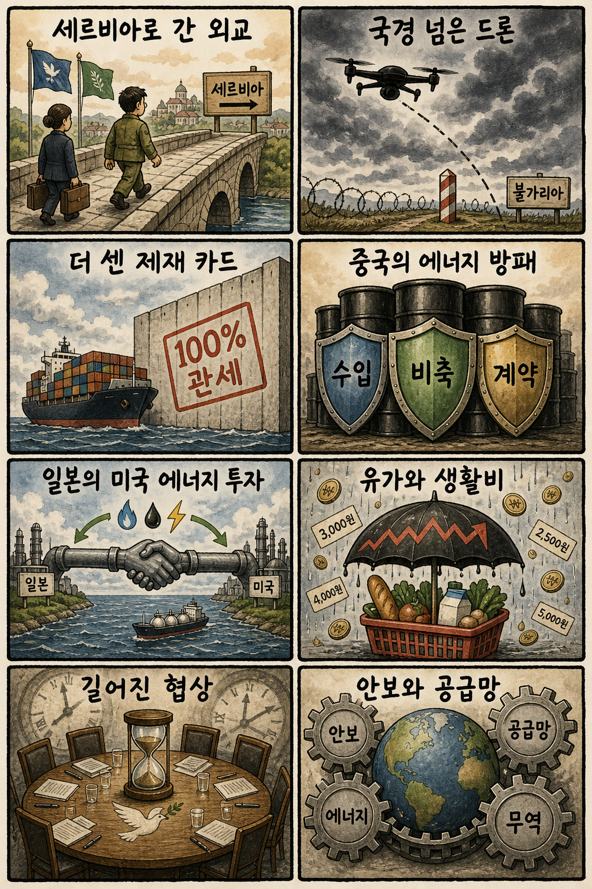
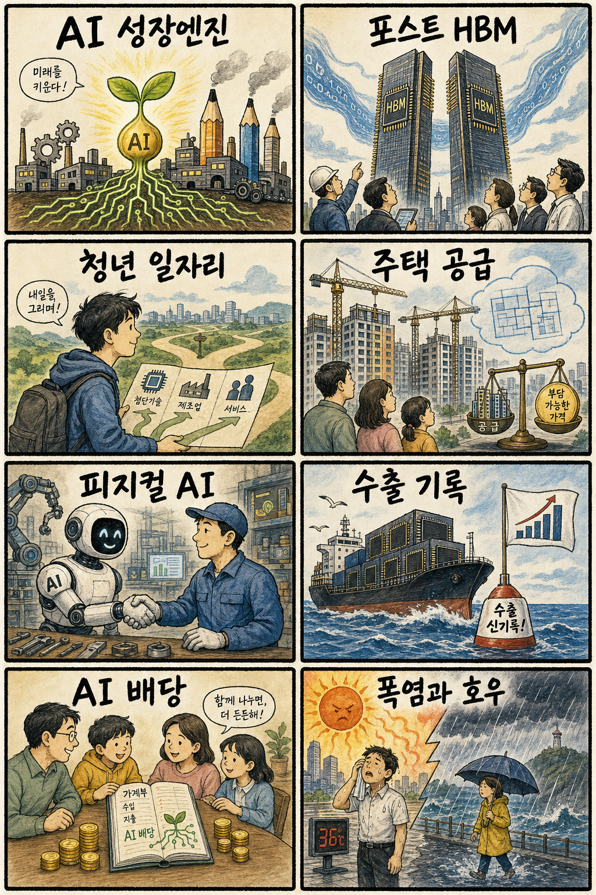

01
팔란티어 +10.32% — 기업용 AI 기대와 성장주 위험선호 회복이 겹치며 두 자릿수 상승했습니다
내용요약 172.01달러로 마감했습니다. 기업용 AI 기대와 성장주 위험선호 회복이 겹치며 두 자릿수 상승했습니다.
예상여파 AI 소프트웨어 관심을 높이지만 급등 뒤 추격 위험도 커졌습니다.
MORNING_BRIEFING_20260809
작성 시각: 2026-08-09 06:39 KST · 직전 미국 정규장과 2026-08-09 KST 당일 공개 기사 기준
직전 미국 정규장인 8월 7일에는 다우 +0.28%, S&P 500 +0.62%, 나스닥 +1.30%로 상승했고 S&P 500은 사상 최고치로 마감했습니다. 고용지표 둔화가 금리 부담을 낮추며 기술주 위험선호를 되살렸습니다. 한국의 최근 거래일인 8월 7일은 KOSPI -0.60%, KOSDAQ -0.36%였고 오늘은 일요일 휴장입니다. 다음 거래일에는 미국 기술주 강세가 우호적이지만 국제유가와 국내 대형 반도체의 높은 변동성을 함께 봐야 합니다.
| 지수 | 종가 | 등락률 | 한국 증시 영향 |
|---|---|---|---|
| 다우존스 | 54,036.93 | +0.28% | 경기민감 심리의 제한적 회복 |
| S&P 500 | 7,757.64 | +0.62% | 사상 최고치로 위험선호 개선 |
| 나스닥 종합 | 26,690.62 | +1.30% | 반도체·성장주 심리에 우호적 |
직전 정규장에서 기술주 위험선호가 회복됐습니다.
고용 둔화가 금리 부담을 낮췄습니다.
주말 뉴스는 다음 거래일 가격에 반영됩니다.
시가 진입이 불가능하고 검증 표본도 부족합니다.
8월 8일 보고서는 토요일 휴장과 검증 문턱 미충족으로 공식 추천을 내지 않았습니다. 따라서 실제 시가를 사후 진입 기준으로 계산할 종목이 없으며 게시 당시 판단은 그대로 유지됩니다.
| 지수 | 종가 | 등락률 | 기준일 |
|---|---|---|---|
| 다우존스 | 54,036.93 | +0.28% | 미국 08/07 |
| S&P 500 | 7,757.64 | +0.62% | 미국 08/07 |
| 나스닥 종합 | 26,690.62 | +1.30% | 미국 08/07 |
| KOSPI | 6,258.77 | -0.60% | 한국 08/07 |
| KOSDAQ | 798.81 | -0.36% | 한국 08/07 |
미국 기술주 반등 연계 반도체·AI 인프라, 차세대 메모리, 데이터센터 전력·냉각, 드론 방어
유가 민감 항공·화학, 내수소비, 급등 후 과열 반도체, 금리 방향에 민감한 고밸류 소프트웨어
내용요약 172.01달러로 마감했습니다. 기업용 AI 기대와 성장주 위험선호 회복이 겹치며 두 자릿수 상승했습니다.
예상여파 AI 소프트웨어 관심을 높이지만 급등 뒤 추격 위험도 커졌습니다.
내용요약 31.13달러로 마감했습니다. AI 서버 관련주로 매수세가 유입되며 강하게 반등했습니다.
예상여파 국내 서버·냉각 연결주에 우호적이나 변동성이 큰 종목군입니다.
내용요약 214.42달러로 마감했습니다. 클라우드 보안 수요 기대와 기술주 강세 속 상승했습니다.
예상여파 AI 시대 보안 지출의 방어력을 보여주지만 밸류에이션 점검이 필요합니다.
내용요약 328.58달러로 마감했습니다. 성장주 선호 회복에 힘입어 상승 마감했습니다.
예상여파 고변동 기술주 심리를 지지하지만 개별 수요와 마진은 별도 변수입니다.
내용요약 354.30달러로 마감했습니다. 기술주 강세장에서도 상대 약세를 보였습니다.
예상여파 대형 AI 플랫폼 내부에서도 실적·규제·투자비에 따른 차별화가 이어지고 있습니다.
오늘은 일요일로 한국 증시가 열리지 않습니다. 다음 거래일에는 나스닥 +1.30%와 S&P 500 최고치가 반도체·성장주 심리를 돕겠지만, 최근 거래일 SK하이닉스 -4.88%와 KOSPI -0.60%에서 확인된 국내 변동성은 남아 있습니다. 미국발 반등만 보고 시초가를 추격하기보다 주말 국제유가와 지정학 뉴스, 원·달러, 외국인 현·선물 수급, 대형 반도체의 첫 30분 가격 안정 여부를 함께 확인해야 합니다.
오늘은 추천 없음 — 현금 관망
일요일 휴장으로 당일 시가 진입 기준을 적용할 수 없고, 전일까지의 외국인·기관 수급, 컨센서스 변화, 30건 이상 유사 조건 확률 보정, 예상 손익비 1.5 이상을 동시에 검증한 후보도 없습니다. 임의의 점수와 확률은 제시하지 않습니다.
관심 연결종목 미국 기술주 반등과 연결되는 반도체·AI 인프라, 차세대 메모리, 데이터센터 전력은 다음 거래일 관찰 대상일 뿐 매수 추천이 아닙니다. 장전 갭이나 급반등 시 추격매수 금지입니다.
드론 영공 침범과 대러 제재 논의를 봅니다.
중동 긴장과 중국의 공급 완충 전략을 점검합니다.
다음 거래일 대형 반도체와 외국인 수급을 봅니다.
전력 수요와 교통·시설물 안전을 확인합니다.
핵심 요약: AI 투자는 국가 성장전략과 대형 데이터센터 자본으로 확장되는 동시에 소프트웨어 수익화와 규제 논쟁을 통과하고 있습니다. 국내에서는 HBM 이후 메모리 주도권 경쟁이 다음 산업축으로 부상했습니다.
내용요약 AI 생태계를 국가 차원의 새 성장축으로 육성하기 위한 인프라·인재·산업 전략을 다룬 기획 보도입니다.
예상여파 정책이 구체화되면 연산 인프라와 산업 AI 투자가 늘 수 있지만 재원 배분과 민간 수익화가 성패를 가릅니다.
내용요약 엔비디아가 대형 AI 인프라 프로젝트 개발사에 최대 30억 달러를 투자한다는 보도입니다.
예상여파 AI칩 공급자를 넘어 데이터센터 생태계 전반으로 자본 연결이 확대되며 전력·냉각·네트워크 수요도 커질 수 있습니다.
내용요약 AI 충격 속에서 소프트웨어 기업의 실적과 사업모델에 따라 주가와 성장 전망이 갈리고 있다는 보도입니다.
예상여파 AI 기능을 매출과 비용 효율로 연결한 기업과 기존 구독 모델이 흔들리는 기업의 차별화가 심해질 수 있습니다.
내용요약 삼성과 SK가 HBM 이후 메모리 기술과 연결형 인프라 주도권을 놓고 경쟁한다는 보도입니다.
예상여파 차세대 메모리의 양산 일정과 고객 채택이 국내 반도체 공급망의 중장기 투자 방향을 좌우할 수 있습니다.
내용요약 미국 의회의 AI 규제안을 두고 기업 경쟁력과 안전 기준 사이의 갈등이 커지고 있다는 보도입니다.
예상여파 규제 범위가 바뀌면 대형 플랫폼의 개발 비용과 스타트업 진입장벽, 글로벌 규범 경쟁이 함께 달라질 수 있습니다.
핵심 요약: 우크라이나 외교와 드론 영공 침범이 유럽 안보의 긴장을 보여주는 가운데 미국의 대러 제재, 일본의 북미 에너지 투자, 중국의 에너지 방어가 공급망 지도를 바꾸고 있습니다.
내용요약 젤렌스키 우크라이나 대통령이 러시아와 가까운 세르비아를 처음 공식 방문해 관계 강화를 모색했다는 보도입니다.
예상여파 발칸 지역의 외교 균형과 대러 관계에 미세한 변화가 생길 수 있으며 유럽의 지원 연대에도 영향을 줄 수 있습니다.
내용요약 우크라이나제 모델로 추정되는 드론이 불가리아 영공을 침범한 뒤 폭발했다는 보도입니다.
예상여파 나토 회원국 영공 안전과 드론 식별·방공 투자가 다시 부각되고 우발적 긴장 위험이 높아질 수 있습니다.
내용요약 미국의 대러 제재 법안이 고율 관세보다 강한 압박 수단이 될 수 있다는 분석입니다.
예상여파 러시아와 거래하는 제3국의 금융·무역 비용이 커지고 에너지와 원자재 공급망 변동성이 확대될 수 있습니다.
내용요약 일본 에네오스가 미국 석유화학 기업 TPC를 13억 달러에 인수해 부타디엔 생산 기반을 확대한다는 보도입니다.
예상여파 일본 기업의 북미 에너지·화학 공급망 장악력이 커지며 아시아 경쟁사의 투자 전략에도 자극이 될 수 있습니다.
내용요약 중국이 공급선과 비축, 결제 구조를 다층화해 국제유가 충격을 완충하는 전략을 강화한다는 보도입니다.
예상여파 중국의 수입 대응력이 커지면 원유 흐름과 가격 전가 경로가 달라져 아시아 정유·운송 시장에 영향을 줄 수 있습니다.

핵심 요약: 서울 주택 공급과 청년 고용 대책이 생활경제의 핵심 과제로 떠올랐습니다. AI 이익 공유와 반도체 수출의 성과를 논의하는 한편 오늘은 폭염과 동해안 호우에 동시에 대비해야 합니다.
내용요약 정부가 서울 준공업지역의 주택 2만7천 가구 공급 절차를 앞당기겠다는 보도입니다.
예상여파 사업 속도가 붙으면 중장기 공급 기대를 높일 수 있지만 교통·산업기능 조정과 실제 착공 일정이 중요합니다.
내용요약 정부가 청년 고용 회복을 위한 지원 방안을 발표할 예정이라는 주간 일정 보도입니다.
예상여파 채용 인센티브와 직무훈련의 대상·지속기간에 따라 청년 체감고용과 기업 참여도가 달라질 수 있습니다.
내용요약 AI 산업에서 발생하는 초과이윤을 국민과 나누는 배당 구상이 제안됐다는 보도입니다.
예상여파 사회적 수용성을 높일 수 있지만 재원 구조와 기업 투자 유인, 분배 기준을 둘러싼 논의가 필요합니다.
내용요약 AI 반도체 호황에 힘입어 한국과 대만의 상반기 수출이 처음으로 일본을 넘어섰다는 보도입니다.
예상여파 반도체 중심 수출의 위상이 높아지지만 품목 편중과 업황 반전 위험을 함께 관리해야 합니다.
내용요약 동해안에는 시간당 30㎜ 안팎의 강한 비가 예상되고 서울은 낮 최고 34도의 무더위가 이어진다는 예보입니다.
예상여파 호우 지역의 교통·시설물 피해와 전국의 온열질환, 전력 수요 증가에 대비해야 합니다.
